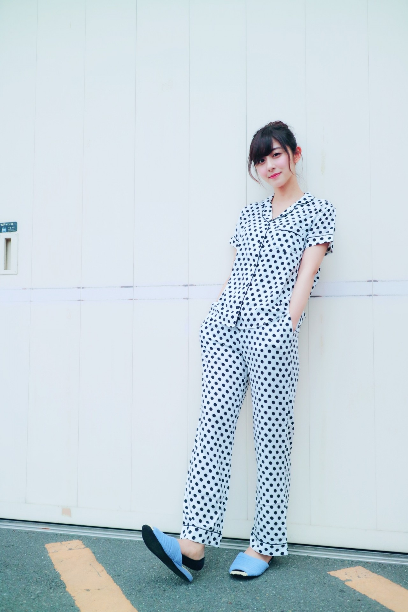
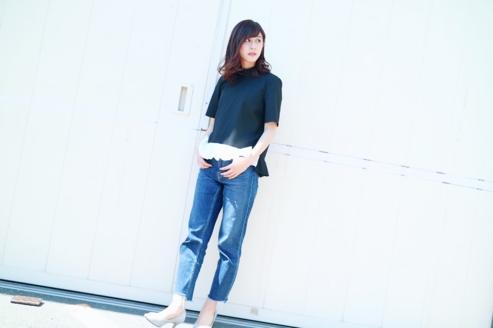

|
2017/05
30
Tue
|
斎藤ちはる
変形シャツ
|
ちはるーむへようこそ
一昨日の京都での握手会の私服を紹介します◎
1部

GUのパジャマ×お団子
(ϋ)/＊
パジャマなのにカッコつける。
こういう雰囲気の
パジャマ姿はレアだったかな？？
1部限定でした☺︎☺︎
それにしても着心地の良いパジャマ...
この日着たのは新品だったけど
もう既に家のno.1パジャマに。笑
2部
3部

ZARAのトップスにMila Owenのデニム
(ϋ)/＊
少し変わった形のトップス。
変形シャツとやら。
これ一枚でサマになるからお気に入りです
ちなみに2部は1部と同じくお団子姿◎
肩くらいの長さでも
お団子出来るんだね！
メイクさんの技術は凄いな〜
カッパ口。
先日の名古屋、列がパンパンになるくらい(!?)の
沢山の方が来てくれました。
本当に嬉しかったですヽ(；；)丿
また来たい！！！！って
言って貰えるような握手を心掛けています☺︎
どうかな......(> <)
是非また会いに来てくださいっ
おやすみ
斎藤ちはる